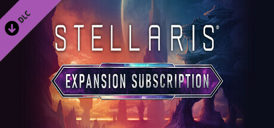
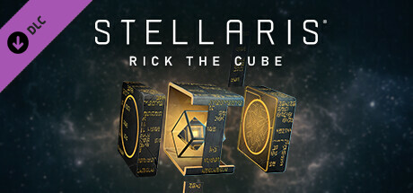
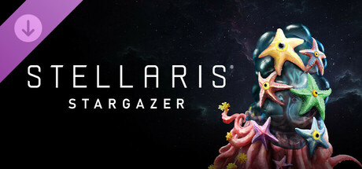
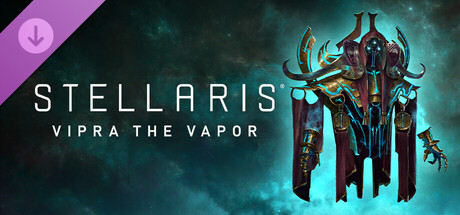

Downloadable content

Downloadable content (DLC) is content built by Paradox Development Studio (PDS) as an extension or add-on to Stellaris. They are modular in nature,[1] which means that a player can choose to play with or without a given DLC by checking them out at the launch menu. An expansion DLC is normally accompanied by a free patch that gives players most of the new content as not to hinder the playability of the game. As such, most DLCs are seen as optional content for players who wish to have a better gaming experience in exchange for some monetary support.
Multiplayer games also benefit from this compatibility, that is to say if the host has a gameplay DLC (expansions and flavor packs) the player does not, the game acts as if the player has it.
Notes:
- Further details on a specific title may be available by clicking on its banner or icon.
- Table sorting can done via the main column for alphabetical order or the
 column for chronological order.
column for chronological order.
Base game editions
The base game is required for any and all DLC relating to the game. While cosmetic/music DLCs can be used with any game version, content DLCs can't be used prior to the version they were released with.
| Title and Quick description | |
|---|---|
Released on 2016-05-09.
|
|
Released on 2016-05-09.
Includes the following content:
|

Expansion subscription
The Expansion subscription provides access to all Stellaris DLC for a monthly fee.
| Title and Quick description | |
|---|---|

Released on 2024-02-27.
The Stellaris Expansion Subscription includes:
|
Expansions
Expansions change the game considerably; introducing new and improved gameplay mechanics as well as many kinds of flavor and various balance tweaks (included in the accompanying free patch).
Full expansions
| Title and Quick description | |
|---|---|
Released on 2018-02-22.
|
|
Released on 2018-12-06.
|
|
Released on 2020-03-17.
|
|
Released on 2021-04-15.
In Nemesis the player will be able to determine the fate of a destabilizing galaxy. Adding espionage tools, a path to power as the Galactic Custodian to combat endgame crises - or the Menace option to BECOME the endgame crisis - Nemesis gives you the most powerful tools ever available in Stellaris. Ultimately you will have to make the choice between chaos or control, to take charge of a galaxy spiraling into crisis. Will you find a way to take power through diplomacy or subterfuge, or will you watch the stars go out one by one?
|
|
Released on 2022-05-12.
Gain access to new features designed to unlock the next level of your empire. Guide a galaxy full of potential subjects to glory - or subjugation. New mechanics provide many ways to specialize your vassals' roles within your empire, bring new planets and subjects under your reign, and new magnificent megastructures to project your power further, faster. Whether you're ruling the galaxy from the bridge of your flagship or from the opulent capital of your magnificent homeworld, Overlord will grant you the following perks of leadership:
|
|
Released on 2023-05-09.
Add Galactic Paragons to your empires and experience a new level of character and story as great leaders rise to positions of power and follow your lead to the stars. With exclusive additions to the all-new Council mechanic, leaders who you can shape to amplify the vision for your empire, new civics, and much more, Galactic Paragons will shape the future in ways the galaxy has never seen before.
|
|
Released on 2024-05-07.
As your scientists discover ever more advanced means to commune with the machine, your society will face new ethical and social dilemmas. Biological species grapple with the effects of rapid augmentation, while the very nature of identity is thrown into question by the rise of synthetic consciousness. Meanwhile, in an otherwise unremarkable corner of the galaxy, a robotic empire has arisen with individualistic personalities. A democratically elected government now presides over the fate of these singular Machines. It is an age of technological glory, rapid social change, and unbridled ambition… But in the depths of space, a danger unlike any before encountered is about to emerge, a looming threat that will throw the very meaning of life into question.
|
|
Released on 2025-05-05.
Evolution had its chance. Now it's our turn. In Stellaris: BioGenesis, step into the role of a master geneticist, sculpting the galaxy to your design with living ships, engineered ecosystems, and enhanced species. Forge new paths with unparalleled bioengineering tools to create a civilization that thrives on adaptability and evolution – or exploit these tools to dominate the stars. But beware, the wonders of life may harbor unforeseen dangers, including ancient threats lurking in the depths of space. The line between creator and creation blurs as you unravel the mysteries of life itself, unlocking the power to forge a living weapon capable of reshaping the galaxy – or devouring it.
|
|
Released on 2025-09-22.
Delve in the Shroud. End the cycle. The Psionic Plane is vast and full of perils. Shadows of the Shroud is the ultimate expansion for those who seek to master the unknown behind the veil, offering a complete overhaul of the Psionic Ascension Path. Moral actions, patron allegiances, and the ever-present risk of total annihilation will now shape your connection to the entities that live on the other side. The Machine Age redefined the Synthetic and Cybernetic ascension. BioGenesis reshapes the Biological ascension. Shadows of the Shroud completes the trilogy with a comprehensive remaster of the Psionic Ascension in Stellaris.
Stellaris: Shadows of the Shroud will also feature New Origins, Civics, Government types, events, portraits, ships… and more! *The End of the Cycle will remain available to players who own the base game. Shadows of the Shroud will grant access exclusive new content that expands it. |
|
To be released 2026 Q2.
Build no borders. Claim no Worlds. The Galaxy is not a trophy to be seized, but a path to be taken. In Stellaris: Nomads, you will survive the void by staying in motion. While the great powers of the Galaxy squabble over lines on the map, your civilization has realized a fundamental truth: life flourishes on the move. Chart Waylines across the stars, linking your Waystations into living networks of trade, influence, and opportunity. Your strength lies in motion, in presence, in the relationships you build from system to system. Your people do not look up to the stars. They gaze at them through the viewports of Arkships: massive, self-sustaining habitats that serve as your capital. But even those who call the void home cannot ignore the coming darkness. Will you take up the mantle of Defender of the Galaxy and stand in service to all who share the stars? Key Feature:
|


Mechanical expansions
Mechanical expansions are smaller expansions than full expansions. Mechanical expansions' main focal point is on adding or expanding certain gameplay mechanics (in addition to the accompanying free patch).
| Title and Quick description | |
|---|---|
Released on 2024-09-10.
Cosmic Storms is a Mechanical Expansion for Stellaris where the skies teem with eight new storm types filled with peril and promise. From Electric Storms harnessing the power of lightning to the formidable Nexus Storm, a galactic tempest of unparalleled magnitude, these natural phenomena challenge you to make skillful choices to steer your empire safely and profitably through the chaos. Embark on your journey with the Storm Chasers Origin, uncover the secrets of two new Precursors, or engage with the storms themselves through the Astrometeorology and Storm Devotion Civics. Experience the majesty and menace of these cosmic forces through beautifully rendered art and immersive audio. Navigate the tempest, harness its power, and shape your empire’s destiny. The storms are coming. Are you prepared?
|

Narrative expansions
Narrative expansions are expansions larger than story packs but are not full expansions. Like story packs, narrative expansions' main focal point is on adding more flavor to the game (in addition to the accompanying free patch).
| Title and Quick description | |
|---|---|
Released on 2023-11-16.
|

Content packs
Content packs are are expansions of a smaller scale. Unlike regular expansions which focus on adding new gameplay mechanics, content packs' main focal point is on adding more flavor to the game (in addition to the accompanying free patch).
Story packs
Story packs focus on adding new unique discoveries to the galaxy.
| Title and Quick description | |
|---|---|
Released on 2016-10-20.
|
|
Released on 2018-05-22.
|
|
Released on 2019-06-04.
|
|
Released on 2023-03-14.
You are not alone! The galaxy is vast and full of wonders, but it's also full of alien empires you're going to encounter, whether you're ready or not. First Contact offers a set of new origins and mechanics that give players the chance to tell stories about their civilizations' early encounters with visitors from the stars — ones that may not have come in peace:
|
|
To be released on 2024-10-29.
What does it take to contain a galaxy? Will you become the galaxy’s greatest curator or sell your finds for untold riches? Explore, collect, and showcase. The galaxy is now your personal treasure trove.
|


Species packs
Species packs focuses on adding new or enhancing existing phenotypes in the game.
| Title and Quick description | |
|---|---|
Released on 2016-08-04.
Plantoids gives players the ability to play as a plant-like species that has gained sentience and begun to spread its tendrils across the galaxy, planting the roots of new civilizations on new planets.
|
|
Released on 2019-10-24.
Players can look forward to trying out the entirely new Lithoid play style that focuses on mineral production, relentless colonization of even the most marginal worlds, and refusing to cede an inch of your empire - for sedimental value.
|
|
Released on 2020-10-29.
Necroids, an intelligent undead species that live death to the fullest, will allow players to form empires that thrive where others might perish - and perish that others might thrive!
|
|
Released on 2021-11-22.
Dive into the Stellaris galaxy with a sea of new choices, and discover new life where you least expect it. Let a wave of new customizable options for your empire crash into Stellaris, with a treasure trove of features:
|
|
Released on 2022-09-20.
Rise from the primordial ooze all the way to the stars! The Toxoids Species Pack gives players the chance to inhabit toxic worlds, gamble the future of their planets for immediate gains, and make the tough sacrifices necessary to survive a hostile galaxy.
|
|
Released on 2025-11-25.
Thrive where others burn. The Stellaris: Infernals Species Pack invites you to forge a blazing empire, built to endure the galaxy’s most extreme heat. Features: Player Crisis Path
Origins:
Volcanic Worlds
The Infernals Species Pack will also bring you new ships, portraits, and more! |
Extras
Music packs
Music packs add new music created after the game's release to the game's soundtrack.
| Title and Quick description | |
|---|---|
Released on 2016-05-09.
A growing, living set of music – more tracks to be added as Stellaris continues to expand in the future.
|

Cosmetic packs
Cosmetic packs add graphical enhancements to the game.
| Title and Quick description | |
|---|---|
Released on 2017-12-07.
|
|

Released on 2024-03-27.
|
|

Released on 2025-03-24.
|
|

Released on 2026-04-29.
|
E-books
E-books are books written based on the Stellaris universe. These, however, do not impact the actual game in any way whatsoever.
| Title and Quick description | |
|---|---|
Released on 2016-05-09.
|
|
Released on 2016-05-09.
Written by Steven Savile: An original novel based on the science-fiction setting of Paradox's Stellaris.
|
Console-only downloadable content
The following downloadable content has been integrated in the base game for PC versions and removed from PC stores on 2026-05-11. They still have to be purchased on consoles versions.
| Title and Quick description | |
|---|---|
Released on 2017-04-06.
|
|
Released on 2017-09-21.
|
|
Released on 2017-12-07.
Humanoids, the most-played phenotype, adds new gameplay options and variety while allowing players to design a species that resembles humans to some degree.
|


File names
List of DLC files in the Stellaris/dlc folder (bold names are expansions):
- dlc001 – Symbols of Domination
- dlc002 – Arachnoid Portrait Pack
- dlc003 – Paradox Account Sign-up Bonus
- dlc004 – Plantoids Species Pack
- dlc005 – Infinite Frontiers eBook
- dlc010 – Creatures of the Void Portrait Pack
- dlc011 – Digital OST
- dlc012 – Leviathans Story Pack
- dlc013 – Horizon Signal
- dlc014 – Utopia
- dlc015 – Anniversary Portraits
- dlc016 - Synthetic Dawn Story Pack
- dlc017 - Apocalypse
- dlc018 - Humanoids Species Pack
- dlc019 - Distant Stars Story Pack
- dlc020 - MegaCorp
- dlc021 - Ancient Relics Story Pack
- dlc022 - Lithoids Species Pack
- dlc023 - Federations
- dlc024 - Necroids Species Pack
- dlc025 - Nemesis
- dlc026 - Aquatics Species Pack
- dlc027 - Overlord
- dlc028 - Toxoids Species Pack
- dlc029 - First Contact Story Pack
- dlc030 - Galactic Paragons
- dlc031 - Astral Planes
- dlc032 - The Machine Age
- dlc033 - Cosmic Storms
- dlc034 - Grand Archive Story Pack
- dlc035 - Rick the Cube Species Portrait
- dlc036 - BioGenesis
- dlc039 - Stargazer Species Portrait
References
- ↑ Forum, "A new patching and expansion policy for Paradox Development Studio", 2011-09-26
- ↑ Forum, First Contact + 3.7.2 Canis Minor patch released, 2023-03-14. | DLC is added automatically to the base game.